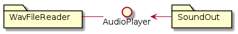
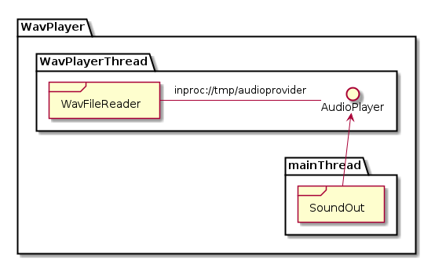
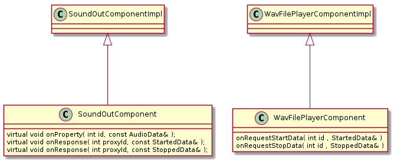

This is YaComponent UserGuide which may help you in planning, create and use the YaComponent Framework for building your software with components, which can be integrated in different process and thread contexts.
Main focus of the project is to help you to focus on the implementation of software components and help you with the exchange of data and rpc calls between these components.
The use of the components and the code must be independent from how your component is used in thread and application context.
With the used technologies it should also not matter if your component interacts with other components written in different programming languages. This is the main reason for focusing on 0MQ and Google protocol buffers.
Writing a component in the YaComponent means implementing a class where your special handling is programmed. This class is derived from the generated component implementation, responsible for data exchange and rpc calls from and to your component.
The YaComponent framework consists of three parts:
- Interface
- Component
- Layout
A basic example will show you the meanings in the next chapter. In this example we have one interface called AudioPlayer, and two components callee WavFileReader and SoundOut

And interface describes three parts of the component communication:
- Properties
- Requests
- Responses
These three parts could be used to communicate with your component. And interface could be
- Provided by a component for use on other components
- Used by a component to get data or control an other component
Properties should be used to deliver data to another component. These Properties are delivered as classes, described in your interface. An interface can define several properties which could used by other components.
A component interested in these properties must notify itself for these properties. So even if a component uses an interface of an other component, no data is delivered if no notification (or subscription) is done.
This handling equals the publish-subscripe pattern.
Examples:
Component WavFileReader reads data from a file (e.g. wav data) and has a property called AudioData for to send the audio data to other components. The class could countain information like samplerate, number of channels and at least the audio data itself.
Requests are used by a component which uses an interface from an other component to trigger some action in this component. This is something like an rpc call. Requests could have arguments.
Examples:
Component SoundOut would like to have audio data from WavFileReader. WavFileReader provides an interface with an Request “StartData()”. If the request is called, WavFileReader starts sending data.
Responses are also rpc calls, which are called from the component receiving a request to the component starting the request. This is useful to have feedback if the action request could be performed. Unlike you may expect responses could also be send from the component without a previous request. To receive responses, no notification or subscription is required. It is up to your component implementation to handle it.
Examples:
Component WavFileReader provides a response “StartedData()” and “StoppedData()”. Response “StartedData()” is send as answer to the request “StartData()”. Response “StoppedData()” is send e.g. and end of file
A component ist defined by its provided or used interfaces. This is essential for what kind of data your component could receive.
A component could provide zero or more interfaces. Top level components just use interfaces from other components.
A component could use use zero or mor interfaces. Low level components just provide interfaces for other components.
The reusability of your component depends on the number of interfaces and the data formats defined in your interfaces.
The main goal of the YaComponent framework is to hide any thread and process dependencies from your code. This does not mean that the usage of Threads inbetween the components is not allowed, but should be safely considered.
A YaComponent Layout describes which components are used by which applications (processes), how the components are organized in threads inbetween the processes and which kind of communication between the components is used.
There is code generated during the component build also for layouts, but this code could not be used directly. It is just an example, how you should code it in your main() function.
Currently there is no intention to fully generate code for processes, cause many things must be done here depending on your applications definition
- command line argument handling
- printing copyright informations or other company dependend stuff
- implementing signalhandler and other stuff.
In this chapter we will look at an example to show the basis ideas of the framework. The example is the same like in the first chapter, same components and interfaces.
The code for the interface is a simple Google protocol buffers file, save with extension proto e.g. to AudioPlayerIfc.proto:
message AudioData {
required double samplerate = 1;
required int32 samplecount = 2;
required int32 channels = 3;
required bool complex = 4;
required bool interleaved = 5;
enum Format {
INTEGER_SIGNED_16_BIT = 0;
INTEGER_SIGNED_8_BIT = 1;
FLOAT_LITTLE_ENDIAN = 2;
DOUBLE_LITTLE_ENDIAN = 3;
}
required Format format = 6;
required bytes data = 7;
}
message StartData {
}
message StopData {
}
message StoppedData {
}
message StartedData {
}
For later reuse of the message type AudioData independent form the messages for request or response, it is usefull to save the message type AudioData in a seperate .proto file and import it in the AudioPlayerIfc.proto file.
The interace definition for the Interface is defined in an xml file, e.g. AudioPlayerIfc.xml:
<interface>
<version maj="1" min="1" rev="0"/>
<include file="AudioPlayerIfc.pb.h"/>
<properties>
<prop id="AudioData" package=""/>
</properties>
<requests>
<req id="StartData" package="">
<resp id="StartedData" package=""/>
</req>
<req id="StopData" package="">
<resp id="StoppedData" package=""/>
</req>
</requests>
<responses>
<resp id="StartedData" package=""/>
<resp id="StoppedData" package=""/>
</responses>
</interface>
The interface describes now the properties of type AudioData, the request to start and stop data delivery and the repsonsed to the requests. The id given to the properties must match the message name in the proto file. The package information could also be defined in the proto file and is similar to a namespace in c++.
To define the components, we use another xml file. First we try to define the data providing component WavFileReader. This is also done with an xml file, defining the components provided and used interfaces. E.g. content of WavFilePlayerComponent.xml:
<component>
<version maj="1" min="1" rev="0"/>
<description/>
<provides>
<interface id="AudioPlayer" xml="AudioPlayerIfc.xml"/>
</provides>
<uses/>
</component>
The provided interface is defined by giving it an id, from with the code implemenation takes the later attribute name for the interface. The interface definition itself is referened via the location of the xml file.
If the component does not use any other components, leave the uses seciton empty or omit.
To define the SoundOut component, we just add another xml file, defining the component and its used interface, e.g. in file SoundOutComponent.xml:
<component>
<version maj="1" min="1" rev="0"/>
<description/>
<provides/>
<uses>
<interface id="AudioPlayer" xml="AudioPlayerIfc.xml"/>
</uses>
</component>
But how are the components linked together? This is a question of your application and process layout. Do you want to have both components in one process/application? Or do you want to seperate them? In our example we decide to intergrate them into a single application and generate a layout descpriont xml file, e.g. called WavPlayer.xml:
<componentlayout>
<processes>
<process name="WavPlayer">
<description></description>
<thread name="WavPlayerThread">
<component name="WavFilePlayer" xml="WavFilePlayerComponent.xml">
<provides>
<interface id="AudioPlayer" address="inproc:///tmp/audioprovider" hwm="5000"/>
</provides>
</component>
</thread>
<component name="SoundOut" xml="SoundOutComponent.xml">
<uses>
<interface id="AudioPlayer" sub="WavFilePlayer.AudioPlayer"/>
</uses>
</component>
</process>
</processes>
</componentlayout>
The component overview gives you and hint how the components are now connected. An overview like this is also generated by the YaComponent framework if plantuml is available.

After all definitions, the code generation parts now dow their jobs. To start code generation, you must use the perl scripts provided with the project or use the predefined cmake makros to generate your code from the xml file and proto files.
A snipped from a CMakeLists.txt used to build the examples files contains the macro calls:
PROTOBUF_GENERATE_CPP(ProtoSourcesAudioPlayer ProtoHeadersAudioPlayer AudioPlayerIfc.proto)
YACOMPONENT_IFC_GENERATE(GENERATED_IFC_AUDIOPLAYER AudioPlayerIfc.xml )
YACOMPONENT_GENERATE(GENERATED_COMP_WAV_SRC WavFilePlayerComponent.xml)
YACOMPONENT_GENERATE(GENERATED_COMP_SOUND_SRC SoundOutComponent.xml)
YACOMPONENT_LAYOUT_GENERATE(GENERATED_LAYOUT WavPlayer.xml)
The generated code from the layout could then be used in your main application:
void* context = YaComponent::context_new();
YaComponentThread WavPlayerThread;
WavPlayerThread.start();
WavFilePlayerComponent WavFilePlayer(context);
WavFilePlayer.setConnectionParaAudioPlayer( "inproc:///tmp/audioprovider", 5000 );
WavFilePlayer.init();
WavFilePlayer.moveToThread(&WavPlayerThread);
SoundOutComponent SoundOut(context);
SoundOut.setConnectionParaAudioPlayer( "inproc:///tmp/audioprovider", "SoundOut" );
SoundOut.init();
As you can see, the two concrete classes WavFilePlayerComponent and SoundOutComponent must be used. This is now the developers part to create this classes and define their behaviour. There are classes derived from the generated classes WavFileReaderComponentImpl and SoundOutComponentImpl with handlers for the pure virtual functions to handle properties, requests and responses.

For the SoundOutComponent theres now an active part to implmement
- set notifications for AudioData properties
- start data by calling StartData request
- wait for end of data or call StopData request
Its also up to the developer to decide which file is played. This could be part of an additional method in WavFilePlayer to set the filename e.g. from commandline arguments.
The Id’s provided in the generated interfaces are useful if there is a multiple use of the same interface or same message types in different interfaces. So you can handle the request properly depending on the interface you received them. In our example, the id’s could be ignored.
Lets now have a closer look about the magic in the message transport.
- How are messages transmitted
- How are connections made
- How is message send / receive triggered
Message a transmitted by using two opensource libraries very popular and also quite good for this handling due to their software licensings. These are:
0MQ is a message based communication library, that fokuses on the fast message exchange without a central broker. This is why they have the 0 in their name. Most of all it allows message transport with tcp, udp, ipc and inproc via shared memory. So it fits our purpose to exchange data between applications, threads and for inner-thread communication
Another benefit is that there are language bindings in java and python. This would allow to extend YaComponent usage as communication framework between java and c++ applications or to control your c++ applications via python scripting.
Google protocol buffers focus on message definition via an IDL and generation of code in c++, java and python. This fits very well together with 0MQ. Its a little overheaded in c++ only communication, so there will be an YaComponent serialize ifc also available, if you want to do c++ only communication and reuse the classes in your code later.
To avoid usage of Google protocol buffers in your whole code, its also a quite good solution to serialize your classes into an Google Protocol Buffer class.
Connections are handling with the 0MQ mechanism, the 0MQ protocol parameter is part of the layout definition, so that you can define the used protocol for your communication. Its a fact that the framework must support dynamic connection changes, but this is part of future versions. Currently all connections are static.
It was a quite good idea to handle the properties and request / responses with direct 0MQ functions like PUB/SUB and REQ/RESP. But this had same disadvantages:
- You need two sockets peer connection
- REQ/RESP were not indepently callable
So the decision was to implement the DEALER/ROUTER pattern to have the full flexiblity for the YaComponent framework
- Requests could be queued without repsonses received
- Responses could be broadcasted to all connected peers without requests
Current limitations are:
- maximum fixed message size: Could be too small, must be enlared in future
- no real experiance with heavy traffic, especially with the loss of properties
The message send and receive is done in the generated component implementation in two ways:
- send is done immediately with 0MQ
- receive is triggered via timer
So in the timer loop the 0MQ socket is checked for messages received. If there are messages available, the messages are read from the socket and the appropriate callbacks for properties, requests and responses are send.
This ensures that your component is not blocked the whole time by calling the blocking functions for zmq_recv, it ensures that your component could process other events (e.g. gui events).